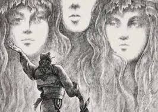

HENEZA ISH MBI KORIJE DHE E RUATE MOS I NGJASE DO NJE E KEQE.HIJA E SAJ I VINTE PAS BESNIKE EDHE ERA FERSHELLINTE NEPER BAR E FLETE.RINE-KATERINEZA U FAL, PUTHI MERMERINE E TE ZOT E I FOLI:
-O IM ZOT KIROLLOJ
-AS UNJ VESHIN ME DEGJO
AS ZGJAT KRAHUN ME SHPETO
-DHE PASTAJ ME GOJE E ME ZEMBREN PLOT:
MUA MEMEZA ME KA DERGUAR TE TE MARR PER BURRE SE TI QENKE FATI IM. UNAZEN E KAM NJ CIP TE MANDILES.
TRAK TRAK KERCITEN CA DRASA QE THYESHIN :DRRASAT E QIVURIT TE KIROLLOJT.U HOQ PASTAJ DERI ME NJE ANE E DOLLI QE BRENDA KY KIROLLOJ BANDILLI SI RUSP E SHKUAR E RUSPIT :ME OPINGA TELATINE ME TRIQ TE ARTEZE ME XHOKE DHENDERIJE.RINE KATERINZA SA E PA E PELQEU.KIROLLOJ-BANDILLI SA E PA E DASHUROJQE TE DY SISTUR E GADITUR NJERI JATRIN.EDHE QE TE DY I MPRUANTE QE LART VETE ZONJA HENE E LARE ND AR E NDE ERGJEND.RE KISH PO ISHIN TE BARDHA SI LINJA E LIRTE EDHE TE NENTE FUSHAT E QIELLIT ISHIN TE GJERA SA HENA KISH SE KU TE BREDHE.KATERINEZA RRINTE TANITHI KRYE UNJUR SI NUSE E NUSERUAR ATYTHI NE VARR I HAPUR ME MANDILEZEN NE DOREN E MENGJER.KIROLLOJ IU AFRUA I HODHI KRAHUN PER BELI I PREKU ME DORE FYTYRENEDHE E PERKEDHELI.AJO E NGRITI SYTE EDHE PA ME NJE MALL QE SKA SI THUHET.PASTAJ ANOJ KRYET NE KRAHEROR TE TIJ U SHTYP U PERSHTYP ME DRIDHJE DHE MBETEN KESHTU. NDENJEN MBI NJE TJATER VARR, MERMER I BARDHE SI BORA, TE DO NJE PLAKU TE MOCEM QE TE GEZOHEJ EDHE ATY, SE MBAN DHENDERI E NUSERI PERSIPER. SHKOJ NJE COPE HERE DHE KUR DORA E KIROLLOJIT I PERKEDHELTE EMBEL E LEHTE FLOKEZAT- KAQE EMBELTHI E KAQE LEHTAZI SI VETEM DORA QE KA SHKUAR NEPER JETEN E VARRIT MUNT TE PERKEDHELE. KATERINEZA I FOLI:
-SA I TRETUR JE O IM-ZOT!
RROBAT TE KANE MARRE MYK, FYTYRA TE ESHTE TRETUR EDHE SYTE THELLUAR-PO JE KAQE I EMBEL E TE DUA KAQE FORT, SA S'DUA TE NDAHEMI KURRE! AY NUK I THA GJE PO VETEM E PERKEDHELI.
-KETA SY TE BUKUR, KAQ TE FELLE E KAQ TE ZINJ KUSH T'I PAT DHENE?
KIROLLOJ BUZEQESHI.
-PO KETE LAVOME MBI SYN' E DJATHTE, O IM-ZOT?
-NE LUFTE KU LEFTOVA ME RA QENI-TURK ME CABJE… MEMEZA EDHE ME VAJTON.
TATEN T'IM E KAM KETU, SE GJITH NE LUFTE RA, ME CABJE.
BRITHTE ERA NEPER QELL EDHE CONTE E PERCONTE LARG RET E BARDHEZA SI VELA LUNDRE.
AQE FORT E DESH KIROLLOJ KATERINZEN SA DESH TA BENTE MOLLE TA MBANTE NE GJI.
-CDO DESHE TE BEHEJ TI, O IM-ZOT?-QIPARIS , O VASHA IME.
-EDHE UNE DHRIZ E BARDHE…
SA TE LUMTUR ISHIN QE TE DY! RRININ MBI GUR TE VARRIT E U DUKEJ SIKUR BREDHIN NEPER QELL, NE ZONJA-HENE, NE KASHTA E ZOTIT-KUMTER E ME TEJ, MAL MBI MAL, FUSHE MBI FUSHE.
VON FORT KIROLLOJ HAPI GOJEN E FOLI:
-SI DO QE TA LIDHEM BESEN, MOJ FTUJZA IME? A VJEN TI NE ATE JETE, A TE VI UN KETUNE?
RINE-KATERINZA RRINTE E MEJTUAR.
VESHTRONTE HENEN LART , UJRAT POSHTE, BAR E PEME RETH E RROTULL… KAQE
BUKURI AN'E MB'ANE , O ZOT I MATH!- SI TE NDAHESH NGA KJO BOTE?
E ME QE ISH MUAJI MAJ E ME QE ISH SHOSHUR QE LART NJ RE UDHETARE, S'DI SE NGA VINTE NJE ERE E EMBEL HUNAPI- KAQE E EMBEL SA TE BENTE TE MBYLLNJE SYTE.
TJATER GJE ME TE EMBEL AS QE KA…
-TINK-TINK-TINK! NJE ZILE PERTEJ; CIU-CIU! NJE SHPESH NEPER GJUME; FESH-FESH, ERA NEPER FLETE.
EDHE KIROLLOJI SI RUSP I BUKUR, ATY PRANE.
FOLI VASHA:
-NUK DI SI ESHTE ATJE, O IM ZOT, SE AS SYRI MA KA PARE, AS KEMBA MA KA SHKELUR. PO SE MA THUA TI, SKA QYSH MOS JETE BUKUR. DHE UNE…
… IU DERDHE FLOKEZAT MBI SUPE. FLOKEZAT E ARTA MBI SUPE SI BORA.
U DRODH KIROLLOJI I VDEKURI NGA KAQE BUKURI… DHE MBETI PASTAJ I MEKUR, MIDIS DY BOTESH
-PERSE DRIDHESH FTUJZ' E BARDHE?
-NGA E FTOHTA O IM-ZOT!
PO E FTOHTA QE E BENTE VASHEN TE DRIDHEJ NUK ISH TJATER, PO E FTOHT’ E VARRIT TE HAPUR. E SI I PUSHTOJ MEZIN E KRAHN’ E MAJTE, E SI I ANOJ KRYET NE KRAHARUAR, I FOLI:
-PER KETU T’A LIDHIM BESEN, O IM-ZOT!
DHE U NGRITENE EDHE LITHNE BESEN, ATY NE VARRI I S’EMES, NDENE DRITEN E ZONJES-HENE. E ASKUSH S’DUHEJ TE DINTE BESEN E MARTESEN E TYRE!
…
E GJELBER ESHTE FLETA E DHRIZES, I GJELBER ESHTE BARI I PRILLIT,
cipi-cep
mandili-shami
rusp-monedhe floriri
telatine-lekure e kuqe me vija qe perdoret per pjesen e siperme te opingave
tirq-pantallona prej shajaku per burra, zakonisht me ngjyre te bardhe
xhok-veshje e siperme e trashe prej shajaku per gra dhe bura pa menge ose me menge te gjata qe shkon deri ne brez dhe ka zakonisht pjese e cila hidhet prapa
lavame-plage
dhriz-shkurre me dege te shtrembta,me shume gjemba dhe me lekure te kuqe
ftuje-kec femer 1-2 vjec;Ketu: vajze e re plot shendet
hunap-shelg i bute, lulet e tij leshojne arome shume te kendeshme
vila-lulese e disa bimeve e drureve qe perbehet prej lulesh te mbledhura tufe ne nje bisht te perbshket si nje vesh rrushi
krez-kurore
1.Cfare lloj teksti eshte?
2.Ne c'kohe te dites zhvillohet ngjarja?
3.Cilat personazhe marrin pjese?
4.Ku shkoi vajza per te biseduar me nenen?
5. Ne kete fragment pervec lidhjes me dy te dashuruarve, cila lidhje eshte me e rendesishme:
6. Pse Kuteli zgjedh pikerish varezat per te zhvilluar tregimin?
7. Cili eshte mesazhi qe perciell kjo rrefenje?